IRCTCDesign case study · 7 min read
The train search comes first.
A redesign concept for the IRCTC rail-booking homepage. I set the brief myself: make searching for a train the first thing the page asks of you.
- Role
- Page structure, hierarchy and visual design
- Team
- Solo
- Timeline
- 2021–22
- Why
- A brief I set myself. Not commissioned by IRCTC and not connected to it
- Platform
- Desktop web. One homepage, drawn 1,920 px wide
- Scope
- Homepage only. No results, payment or ticket screens
- Status
- Visual concept. Not built and not tested with users
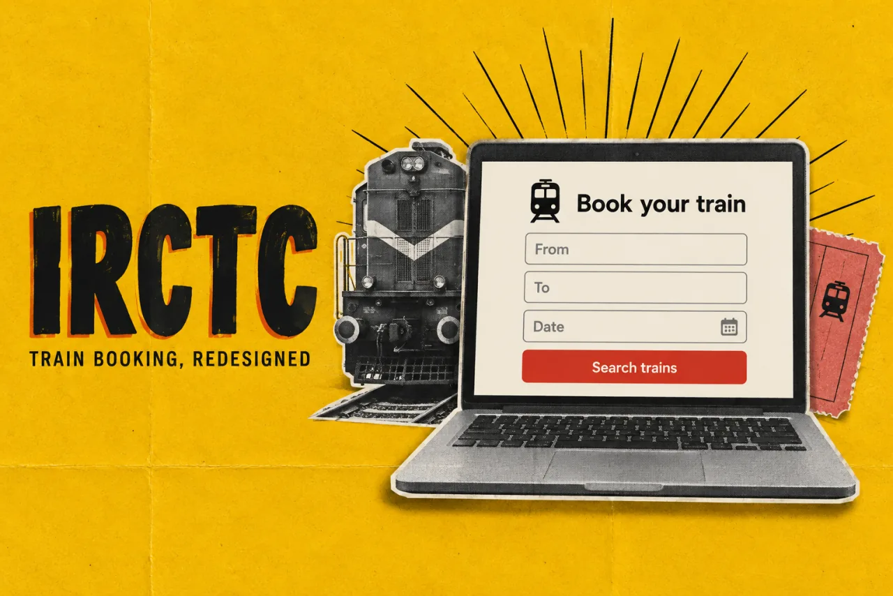
In short
- The problem I set myself: a rail-booking homepage has to offer dozens of services, yet it should be obvious where to search for a train.
- What I did: I designed one long homepage in six bands. The train search fills the first screen and everything else sits below it.
- The key idea: rank tasks by position. Booking comes first, checking a trip you already have sits on its edge, and other services and holidays follow.
- Where it stands: a single desktop mock-up. It was not commissioned, built or tested, and it stops at the Search button.
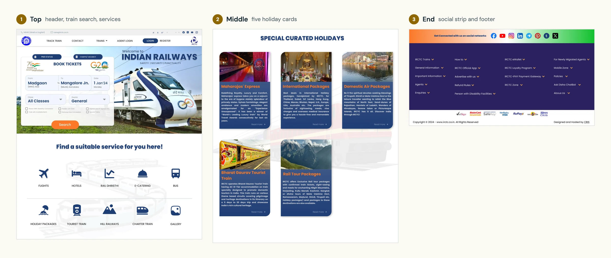
01 The brief
Nobody asked for this, so I wrote the brief
I chose this page as practice because it is a hard ordering problem. One homepage has to carry train booking, trip status, flights, hotels, buses, catering, holidays and a long list of rules and help pages.
My rule was simple. Someone who arrives knowing their route and date should be able to start a search without reading anything else. Everything else stays on the page, further down.
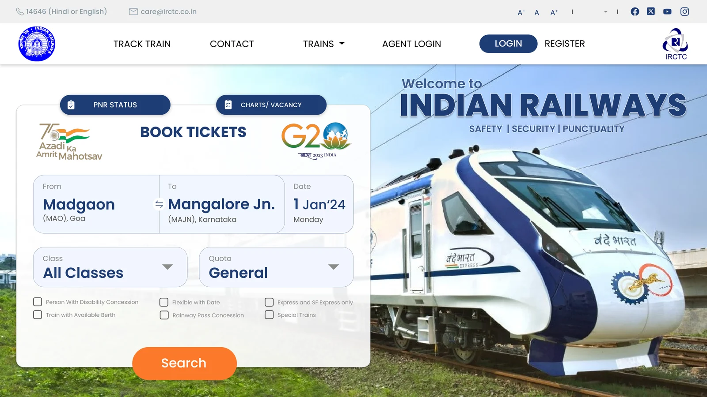
02 Structure
One long page in six bands
The design is a single page, 1,920 px wide and 5,400 px long. I split it into six bands. The header and the search together are 1,080 px tall, the height of a full HD screen.
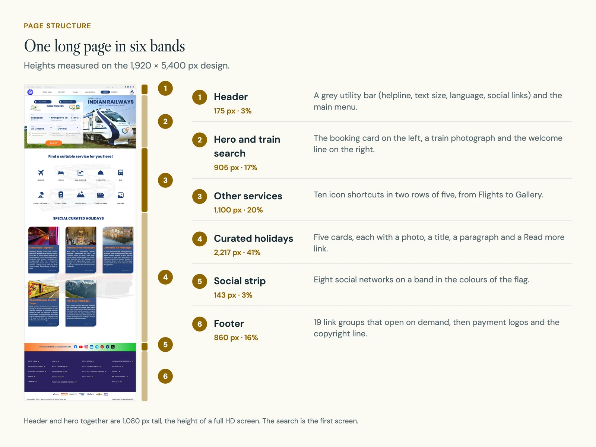
That is the trade-off in this layout. The search is first, but most of the scrolling is promotion. Moving the holidays lower fixes the order. It does not make the page any shorter.
03 Task hierarchy
Position does the ranking
I sorted what the page offers into five kinds of task and gave each one a place. The more common I judged a task to be, the higher it sits. That was my own judgement. I had no usage data.
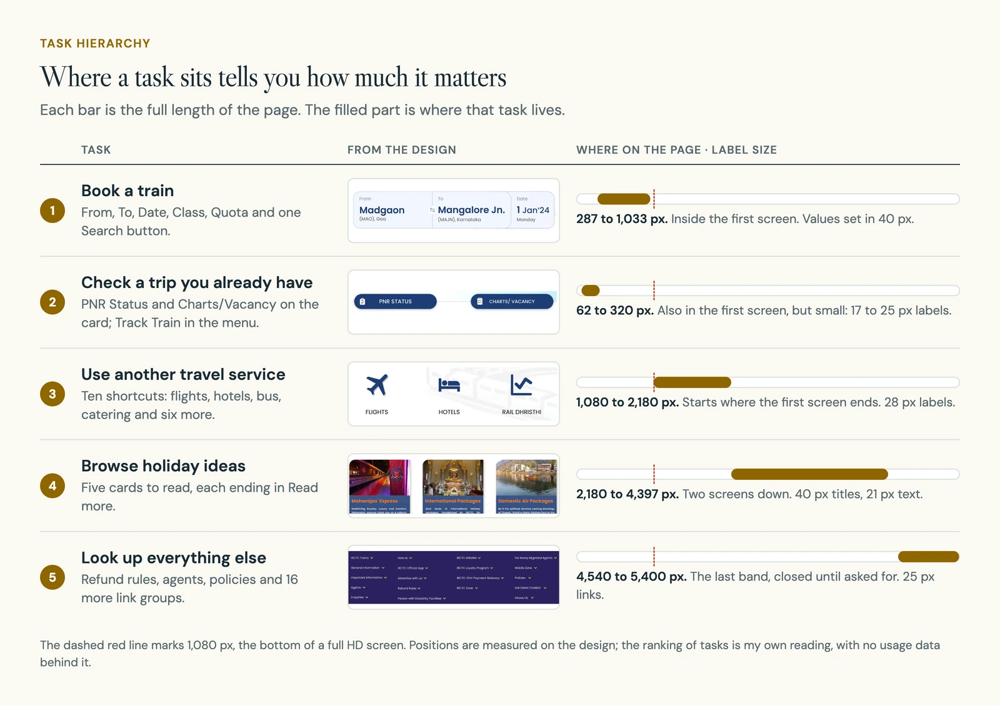
Type size does not follow the same order, and that is a weakness. The two section headings further down are 60 px, larger than Book Tickets at 40 px. The card wins on position and colour, and loses on size.
04 The search card
Five fields and one orange button
The booking card holds the whole search: From, To, Date, Class and Quota, then Search. From and To share a box, so the route reads as one thing. Class and Quota open with a value already in place.
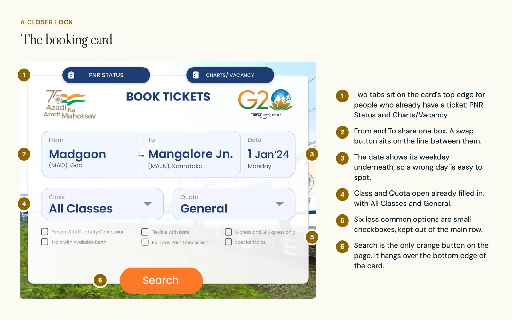
The card still carries six less common options as small checkboxes, such as the disability concession and flexible dates. I left them in view because some of them are access needs. The cost is a busier card. A way to tuck the rest away, without hiding those, would need testing.
People who already hold a ticket have a different job. For them, PNR Status (a PNR is the booking reference on a rail ticket) and Charts/Vacancy sit as two tabs on the card's top edge. Track Train is the first item in the menu.
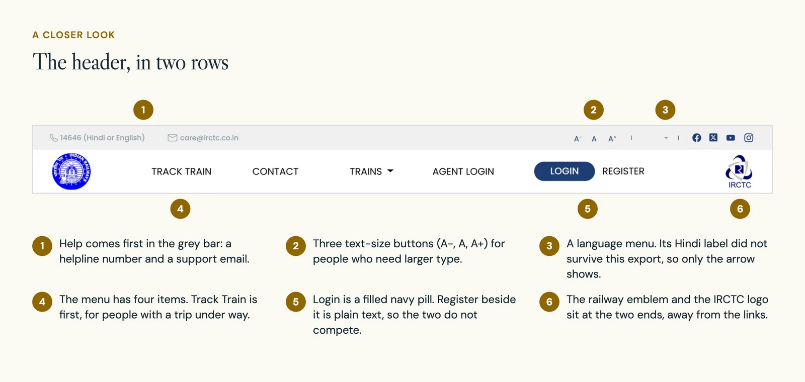
05 Below the search
Everything else waits below the first screen
Under the search, ten other services appear as a grid of icons with short labels, from Flights and Hotels to Charter Train and Gallery. Icons keep this band light, like a menu.
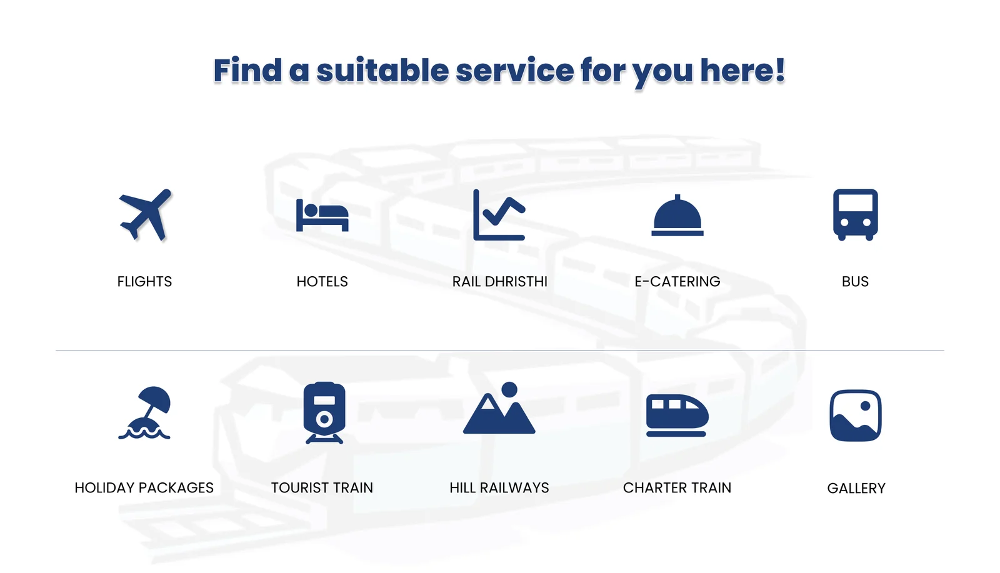
Holidays come after that. Each of the five cards has a photo, an orange title, a paragraph and a Read more link. Someone booking a known route never has to read them.
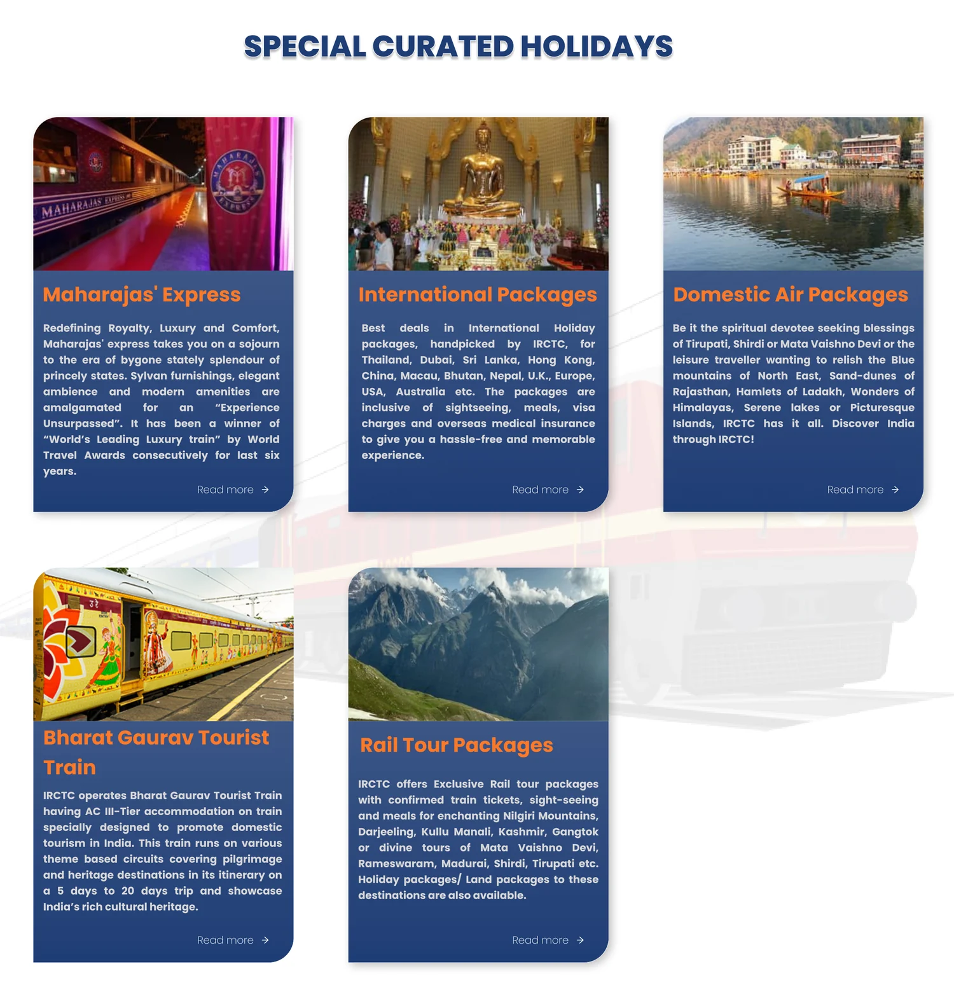
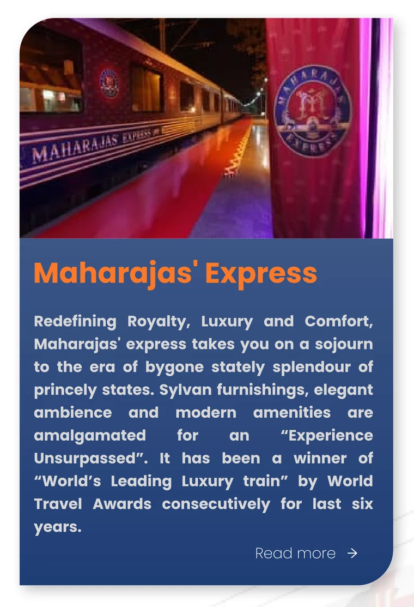
06 Type and colour
Navy for structure, orange for one action
Navy carries almost everything: headings, icons, pills and the holiday cards. Orange is saved for the Search button and the card titles. The footer uses a darker indigo, so it reads as the end of the page.
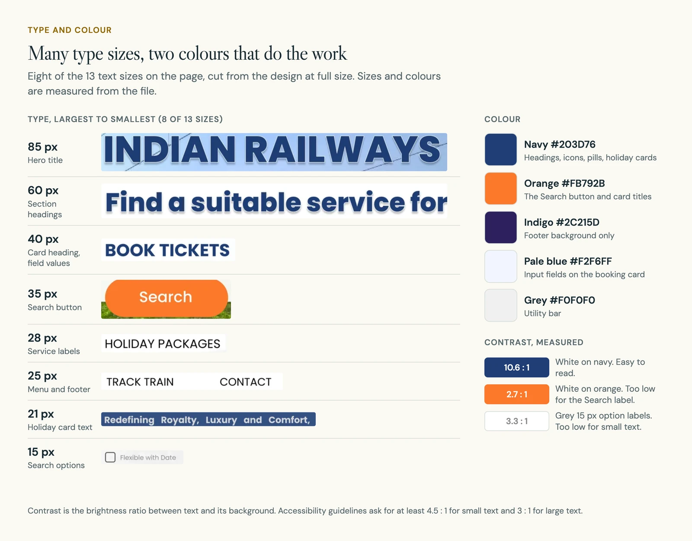
Measuring the mock-up shows two weaknesses. There are 13 text sizes between 12 and 85 px, more than a page like this needs. And the white Search label on orange has a contrast of 2.7 to 1, below the 3 to 1 that accessibility guidelines ask for large text. The grey 15 px option labels are low too, at 3.3 to 1.
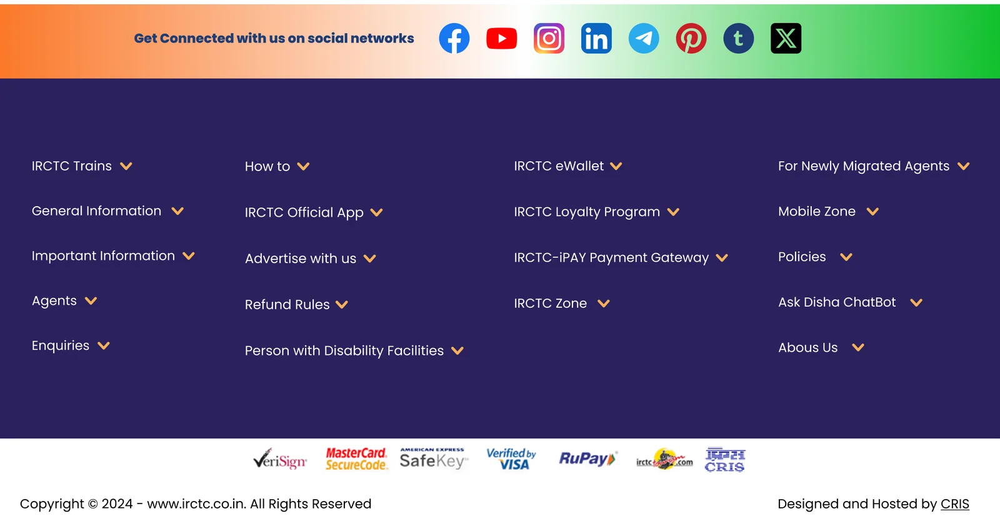
07 What comes next
What it would take to go further
This is one screen of a much longer journey. A calm homepage proves little until the screens after it handle the hard cases: no seats left, a changed fare, a route with no suitable train.
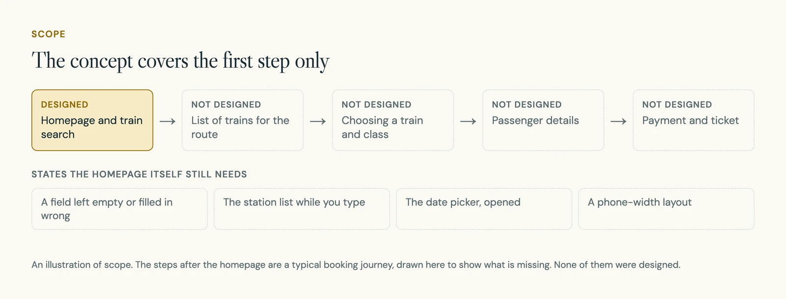
- Draw the homepage's own missing states: an empty or wrong field, the station list and the open date picker.
- Design a phone-width version. The page exists at desktop width only.
- Test three tasks with travellers: find a train, check an existing trip and find a concession option.
- Raise the contrast of the Search label and the small grey text, and cut down the number of type sizes.
08 What I learned
Order is the cheapest tool, and it is not enough
Putting the search first cost nothing and did most of the work. But position alone left gaps that only show up when you measure: headings lower down that are bigger than the main task, and an action colour that is hard to read.
The lesson I take from it is to settle the type scale and check contrast before drawing the first card.
A photography site that leaves room for the photographs.